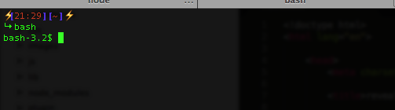

Bash: Bourne-again shell
Die Bash ist eine freie shell und ist teil des GNU-Projektes
Die bash wurde 1987 von Brian Fox geschrieben und ist aktuell in version 4.3 verfügbar

Beispiel wie die Bash aussehen kann
Gibt es Bash alternativen?
Was sind keine alternativen?
zumindest nicht für alles :P
cd
grep
less
cat
watch
tail
ssh
scp
find
screen
ls
touch
pwd
nano
whereis